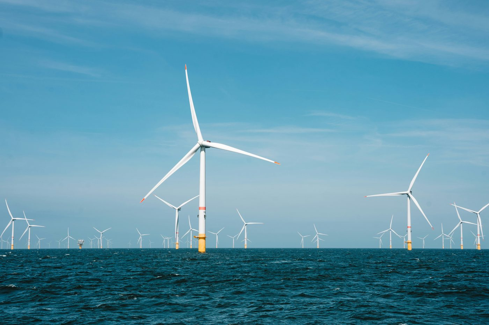
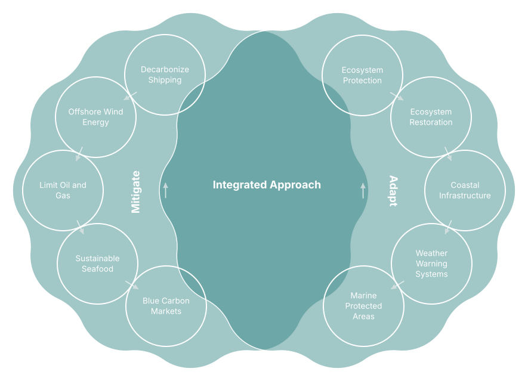
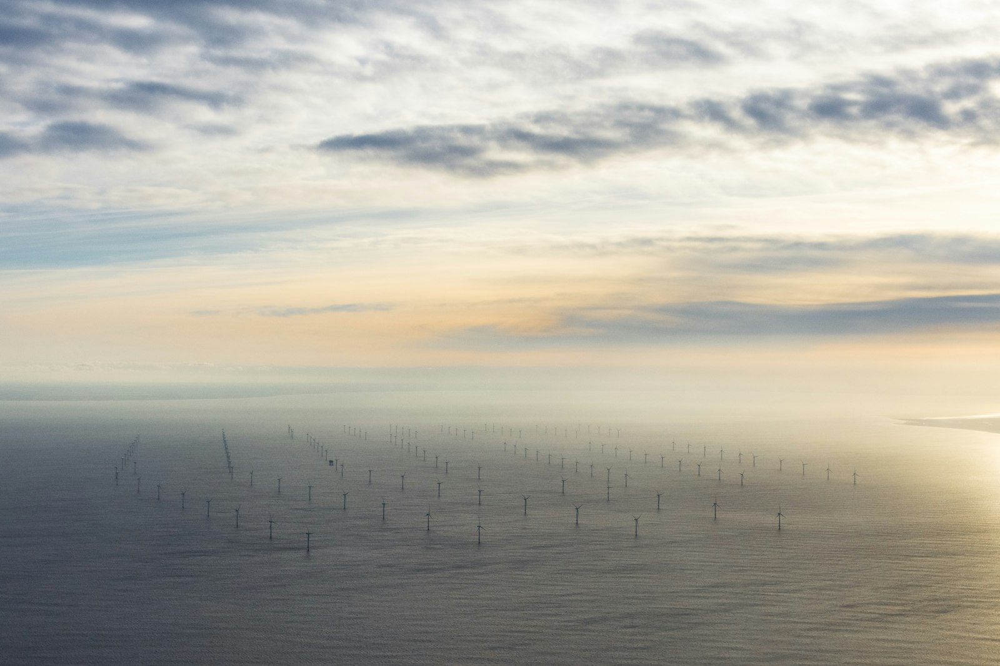
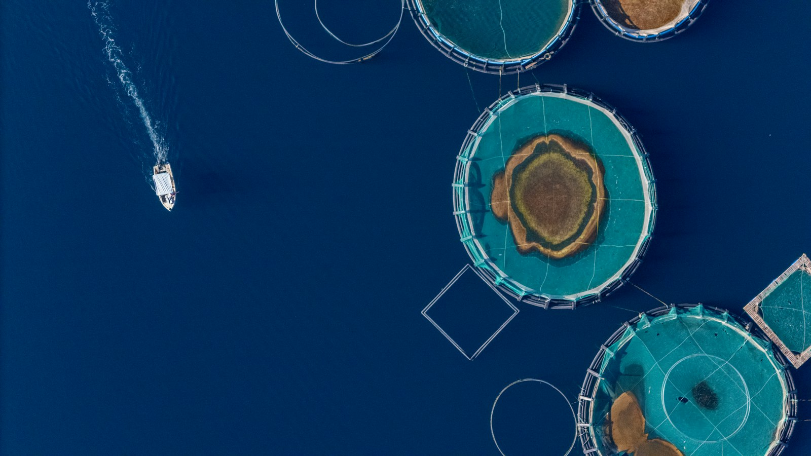
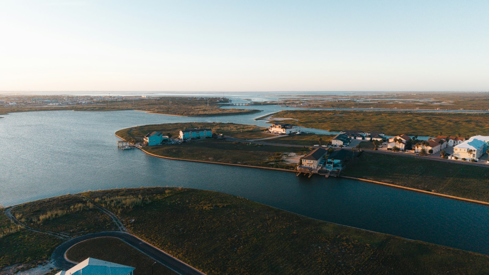
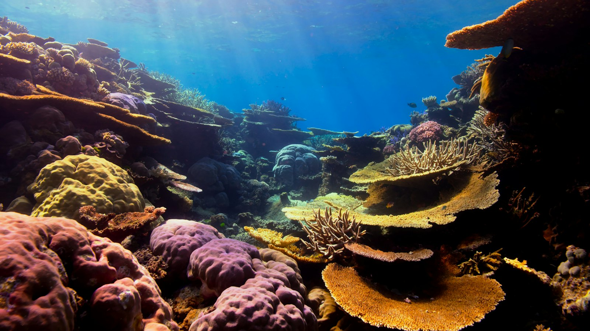
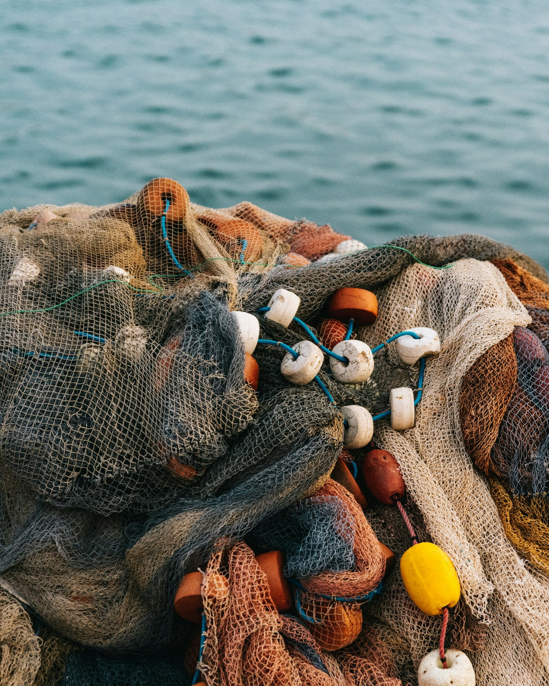

Climate change threatens human futures through rising sea levels, stronger storms, and the shifting migration of fish stocks. By implementing proactive measures, we can protect coastal communities, conserve marine biodiversity, and unlock sustainable economic growth within the blue economy.
Mitigation is ultimately about reducing the pressure placed on the ocean by addressing climate change at its source. It asks: how do we stop the greenhouse gas emissions driving warming? It requires moving from a system that continually adds carbon and heat toward one that operates within ecological limits. The challenge is therefore not simply to reduce emissions, but to change the underlying systems and incentives that produce them.
Adaptation and restoration address a different question: how do we live with a changing ecology while maintaining its capacity to support life? Adaptation reduces vulnerability as conditions change, while restoration strengthens the ecosystems that absorb environmental stress and provide essential functions, building resilience rather than trying to preserve the ocean exactly as it was.

Addressing risk requires both mitigation and adaptation strategies. Blue carbon projects, offshore renewable energy, and sustainable ocean management are key tools in this effort.
Curated around ocean-based solutions and classified across food, energy and environment, drawing on Drawdown Explorer's research and recommendations. Each is rated for how confidently it's backed by current evidence.

Large wind turbines installed at sea use stronger, consistent offshore winds to generate electricity without using land.

Uses better feeds and integrated systems while reducing pollution, resource use and pressure on wild fisheries.

Protects and restores mangroves, salt marshes and more, preserving habitat, storing carbon and buffering floods and storms.

Restricts bottom-contact activities such as trawling to preserve coral, sponge habitats and sediment organic carbon.
Protects and restores kelp and seaweed ecosystems by reducing stressors and supporting natural regeneration.

Uses science-based catch limits, seasonal closures, MPAs and improved monitoring for sustainable fishing.
Adds alkaline minerals or compounds to seawater to increase its capacity to absorb and store atmospheric CO₂ as dissolved bicarbonate and carbonate.
Uses electricity to alter seawater chemistry, either extracting CO₂ directly, or increasing the water's capacity to absorb additional atmospheric CO₂.
Cultivates seaweed in coastal waters for food, materials and ecosystem services, absorbing nutrients and CO₂ as it grows.
Grows or collects carbon-rich biomass such as seaweed and transports it to the deep ocean or seafloor, where some carbon may stay isolated from the atmosphere.
Uses pumps or other mechanisms to bring nutrient-rich deep water to the surface, stimulating phytoplankton growth and potentially increasing carbon uptake.
Adds nutrients such as iron to ocean waters to stimulate phytoplankton growth and potentially increase biological uptake and export of CO₂.
Additional solutions worth tracking include decarbonizing shipping, reducing pollution from oil spills, plastics and mining, expanding blue carbon markets and MPAs, and building coastal adaptation infrastructure.